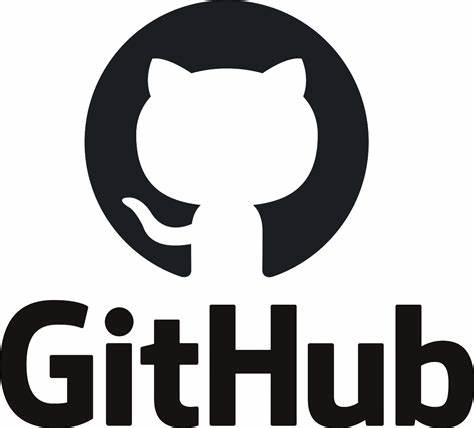

Contatti

Sono un ragazzo di 15 anni appassionato del mondo dell'ethical hacking. Amo esplorare il campo della sicurezza informatica e sviluppare strumenti che possono aiutare a identificare e risolvere le vulnerabilità nei sistemi. Utilizzo vari programmi e strumenti come Nmap, Hydra, Aircrack-ng, Wifite, Anon-SMS, ARP, e John the Ripper per condurre test di sicurezza e sviluppare soluzioni innovative.
Questo strumento permette di eseguire operazioni OSINT (Open Source Intelligence) su account Instagram. È utile per raccogliere informazioni pubblicamente disponibili su un determinato account, come post, follower, seguiti, e altre attività.
Repository GitHubQuesto progetto mira a sviluppare un payload capace di bypassare gli antivirus su Windows 11 utilizzando un dispositivo Digispark. Il tool è stato progettato per dimostrare come i dispositivi di attacco fisici possono essere utilizzati per testare la sicurezza dei sistemi Windows.
Repository GitHubHo partecipato a vari progetti di hacking etico, tra cui: